Registro e acompanhamento das previsões de modelos de machine learning em produção: o que foi previsto, para quem, com base em quais fatores e no que deu.
Quando um caso é sinalizado como risco, a pergunta do analista é sempre a mesma: “já vi isso antes?”
A semelhança vem dos fatores de risco em comum, não do texto — por isso o problema é de grafo, e não de consulta em coleção.
| Banco | Papel |
|---|---|
| MongoDB | predições, projetos, modelos — o histórico |
| Redis | painel ao vivo, cache e limite de uso |
| Neo4j | relações entre casos (multi-hop) |
Uma organização tem projetos, que têm modelos, que têm versões, que produzem predições.
# crud_pipeline.py MAIN_COLLECTIONS = [ "organizations", "users", "projects", "models", "model_versions", "predictions", # coleção central "metrics_snapshots", "entity_notes", "audit_events", ] for nome in MAIN_COLLECTIONS: db.create_collection(nome) db.predictions.create_index([("project_id", 1), ("score", -1)])
O índice acompanha a consulta mais comum da tela: filtrar por projeto e ordenar por score.
{
"_id": "pred::edu::0007",
"project_id": "proj::evasao",
"entity": { "id": "aluno#014",
"type": "student" },
"score": 0.91,
"explanations": [
{ "feature": "faltas", "impact": 0.42 },
{ "feature": "notas", "impact": 0.31 }
],
"outcome": "TP"
}
A explicação fica embutida no documento: sempre é lida junto com a predição.
Streamlit lendo MongoDB e Redis. É a tela onde o analista acompanha os modelos em produção.
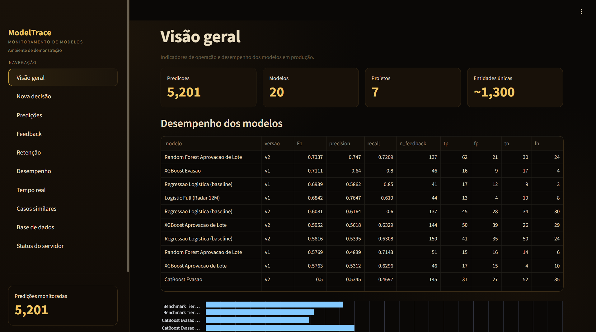
# grava a predição e já atualiza o painel do Redis def insert_prediction(self, doc): self.db.predictions.insert_one(doc) self.redis_ingest(doc) return doc
Na tela, o formulário monta o documento e chama essa função.
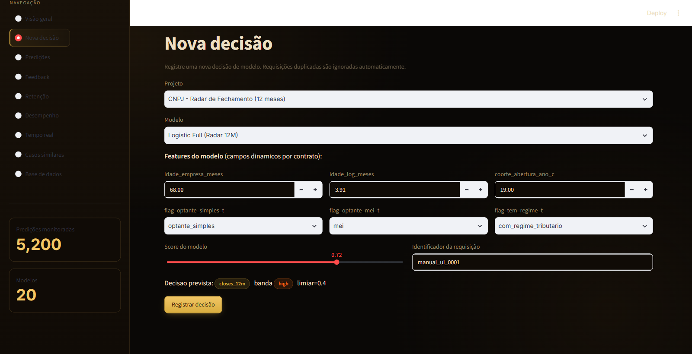
# busca com filtro, ordenação e limite def find_predictions(self, filtro, sort=None, limit=20): cursor = self.db.predictions.find(filtro) if sort: cursor = cursor.sort(sort) return list(cursor.limit(limit)) # ex.: casos críticos de um projeto find_predictions({"project_id": "proj::evasao", "score": {"$gte": 0.85}}, sort=[("score", -1)])
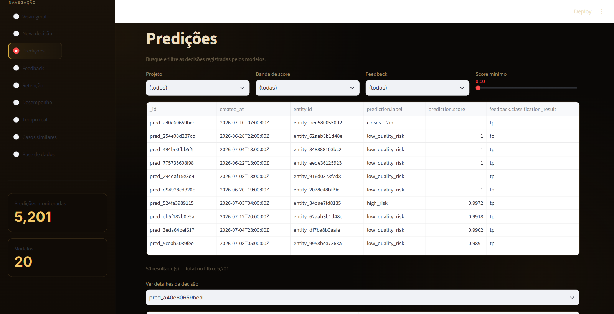
# o analista informa o que aconteceu de verdade def update_feedback(self, pred_id, valor_observado): pred = self.db.predictions.find_one({"_id": pred_id}) acertou = (pred["score"] >= 0.5) == bool(valor_observado) self.db.predictions.update_one( {"_id": pred_id}, {"$set": {"observed_value": valor_observado, "outcome": "TP" if acertou else "FP"}})
É esse campo que depois alimenta as métricas de qualidade do modelo.
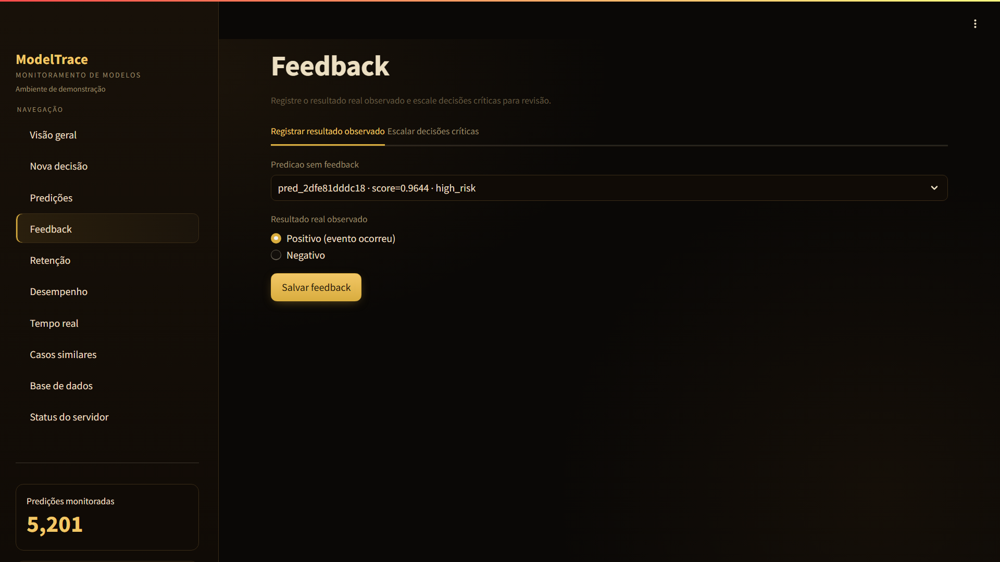
# remove e deixa registro de auditoria def delete_prediction(self, pred_id): r = self.db.predictions.delete_one({"_id": pred_id}) self.append_audit("delete", {"pred_id": pred_id}) return r.deleted_count == 1
Nada some sem rastro: a exclusão vira um evento em audit_events.
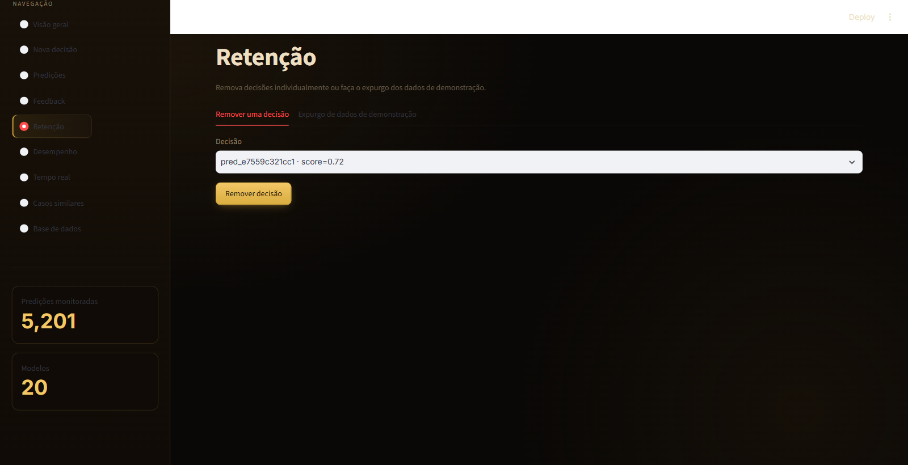
Pergunta: qual versão de modelo está acertando mais?
db.predictions.aggregate([ {"$match": {"outcome": {"$ne": "PENDING"}}}, {"$group": {"_id": "$version_id", "n": {"$sum": 1}, "tp": {"$sum": {"$cond": [ {"$eq": ["$outcome", "TP"]}, 1, 0]}}}, {"$set": {"precisao": {"$divide": ["$tp", "$n"]}}}, {"$lookup": {"from": "model_versions", "localField": "_id", "foreignField": "_id", "as": "v"}}, {"$unwind": "$v"}, {"$project":{"modelo": "$v.label", "n": 1, "precisao": 1}}, {"$sort": {"precisao": -1}}, {"$merge": {"into": "metrics_snapshots"}} ])
| modelo | n | precisão |
|---|---|---|
| evasao v3 | 260 | 0.87 |
| falha-maq v2 | 260 | 0.81 |
| credito v1 | 260 | 0.74 |
Log completo em logs/aggregation_1_leaderboard.json
Pergunta: quais fatores mais empurram os casos para risco alto?
db.predictions.aggregate([ {"$match": {"project_id": projeto}}, # cada predição tem várias explicações → uma linha por fator {"$unwind": "$explanations"}, {"$group": {"_id": "$explanations.feature", "impacto": {"$avg": "$explanations.impact"}, "casos": {"$sum": 1}}}, {"$set": {"impacto": {"$round": ["$impacto", 3]}}}, {"$sort": {"impacto": -1}}, {"$limit": 10} ]) # amostra de casos para inspeção manual {"$sample": {"size": 3}}
| fator | impacto médio | casos |
|---|---|---|
| faltas | 0.42 | 198 |
| notas_baixas | 0.31 | 176 |
| atraso_entrega | 0.22 | 143 |
É agregação plana: mostra quais fatores pesam, mas não diz quais casos se parecem entre si — essa parte fica com o grafo.
Log em logs/aggregation_2_feature_drivers.json
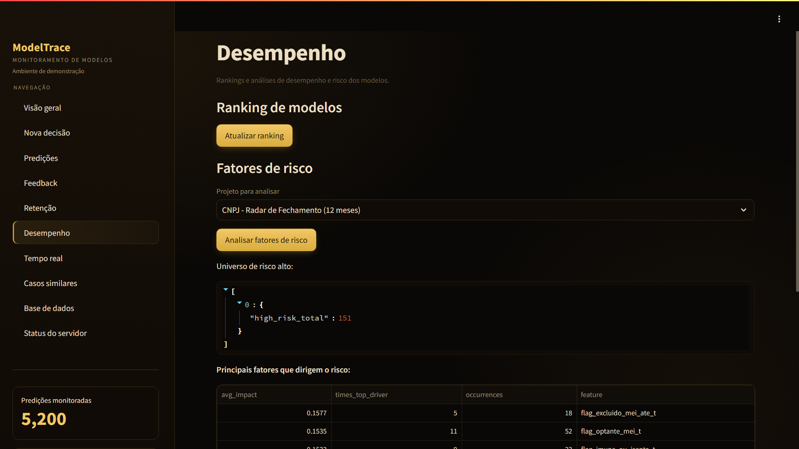
Cada predição que entra atualiza o painel ao vivo, sem consultar o MongoDB.
# Hash — contadores por modelo r.hincrby("mt:counters:evasao", "predictions", 1) # Sorted Set — ranking de risco r.zadd("mt:risk", {"aluno#014": 0.91}) r.zrevrange("mt:risk", 0, 4, withscores=True) # List — últimos eventos r.lpush("mt:feed", evento) r.ltrim("mt:feed", 0, 49) # só os 50 mais novos # String + TTL — cache de consulta r.setex("mt:cache:top", 60, json.dumps(dados)) # Contador com janela — limite de uso da API usos = r.incr("mt:rate:chave") if usos == 1: r.expire("mt:rate:chave", 60) permitido = usos <= 5
| Estrutura | Para quê |
|---|---|
| Hash | contadores do painel |
| Sorted Set | top de risco sempre ordenado |
| List | feed dos últimos casos |
| String + TTL | cache que expira sozinho |
| Contador | limite de chamadas por minuto |
O painel abre pronto porque os números já estão calculados no momento em que o dado chega.
Respostas aproximadas em memória constante, para perguntas em que o número exato não muda a decisão.
# Bloom Filter — "esse caso já entrou?" r.execute_command("BF.RESERVE", "mt:vistos", 0.01, 100000) r.execute_command("BF.ADD", "mt:vistos", "pred::0007") r.execute_command("BF.EXISTS", "mt:vistos", "pred::0007") # HyperLogLog — quantas entidades distintas? r.pfadd("mt:entidades", "aluno#014") r.pfcount("mt:entidades") # Count-Min Sketch — frequência de cada fator r.execute_command("CMS.INCRBY", "mt:fatores", "faltas", 1) r.execute_command("CMS.QUERY", "mt:fatores", "faltas") # Top-K — os fatores mais frequentes r.execute_command("TOPK.ADD", "mt:top", "faltas") r.execute_command("TOPK.LIST", "mt:top")
| Estrutura | Pergunta |
|---|---|
| Bloom | já vi este caso? (evita reprocessar) |
| HyperLogLog | quantas entidades distintas? |
| Count-Min | com que frequência aparece? |
| Top-K | quais os mais frequentes? |
Guardar todos os ids para contar distintos custaria memória proporcional ao volume; o HyperLogLog usa alguns KB com erro de ~1%.
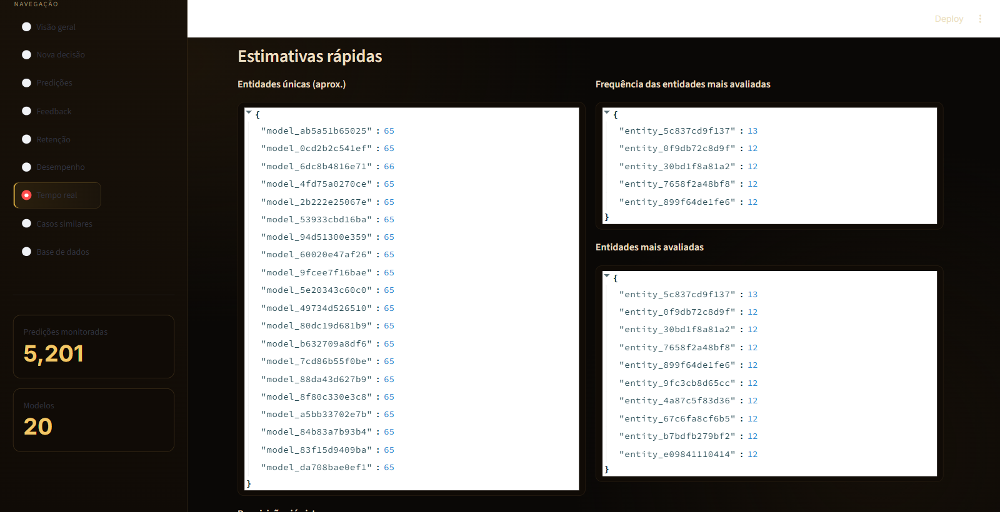
As entidades do banco viram nós; as relações que já existiam nos documentos viram arestas.
# nós em lote UNWIND $linhas AS linha MERGE (e:Entity {id: linha.id}) SET e.label = linha.label # a aresta que interessa: caso → fator de risco UNWIND $linhas AS linha MATCH (e:Entity {id: linha.entity_id}), (f:Feature {id: linha.feature_id}) MERGE (e)-[r:RISK_FACTOR]->(f) SET r.weight = linha.impacto
Com Entity → RISK_FACTOR → Feature o grafo fica bipartido: dois casos se ligam pelos fatores que compartilham.
1.367 nós e 9.014 arestas no dataset usado.
O resultado de cada um é gravado de volta no grafo e passa a ser consultável.
# 1) quem se parece com quem (a funcionalidade central) CALL gds.nodeSimilarity.write('grafo', { writeRelationshipType: 'SIMILAR_TO', writeProperty: 'score', topK: 5 }) # 2) grupos de padrão de risco CALL gds.louvain.write('grafo', { writeProperty: 'community_id' }) # 3) nós mais influentes da rede CALL gds.pageRank.write('grafo', { writeProperty: 'pagerank' })
nodeSimilarity compara os fatores de risco de cada par de casos (Jaccard) e cria a aresta SIMILAR_TO com a nota da semelhança.
| Operação | Saída |
|---|---|
| nodeSimilarity | 1.155 pares de casos parecidos |
| louvain | 7 comunidades (modularidade 0.85) |
| pageRank | 16 iterações até convergir |
MATCH (a:Entity {id: $caso})
-[s:SIMILAR_TO]->(b:Entity)
RETURN b.label, s.score
ORDER BY s.score DESC LIMIT 5
O grafo exportado do Neo4j vira uma página interativa. Toda a visualização fica num único arquivo, grafo_visual.py, usando a biblioteca constelario.
# grafo_visual.py from constelario import Graph, Theme def construir(payload): g = Graph(title="ModelTrace", theme=Theme.relicario()) for nome, estilo in TIPOS.items(): g.add_type(nome, **estilo) for no in payload["nodes"]: g.add_node(no["id"], no["label"], no["type"], props=no["props"], community=no["props"].get("community_id")) for a in payload["links"]: g.add_edge(a["source"], a["target"], type=a["type"]) # a semelhança vira espessura da linha g.set_edge_weight("score") g.inspector_ranking("SIMILAR_TO", title="Casos mais similares") return g construir(payload).save("grafo.html")
Um arquivo .html só — abre sem servidor e vai embutido na aba do protótipo.
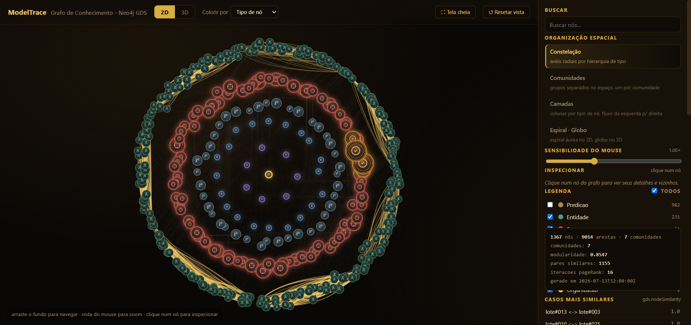
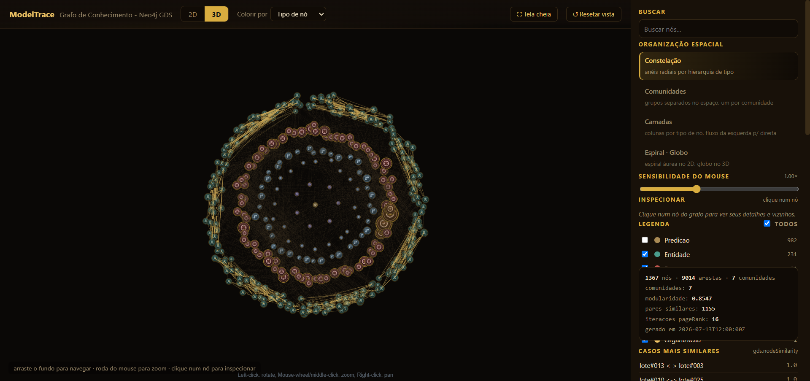
Cada grupo do Louvain ocupa uma região própria; o mesmo grafo aparece dentro do Streamlit.
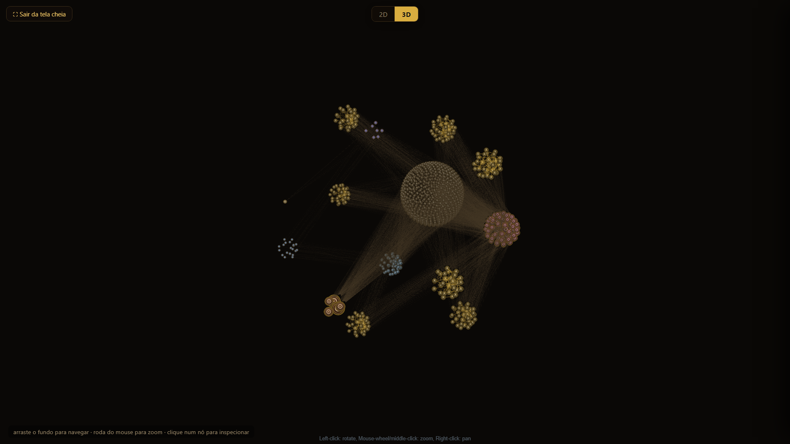
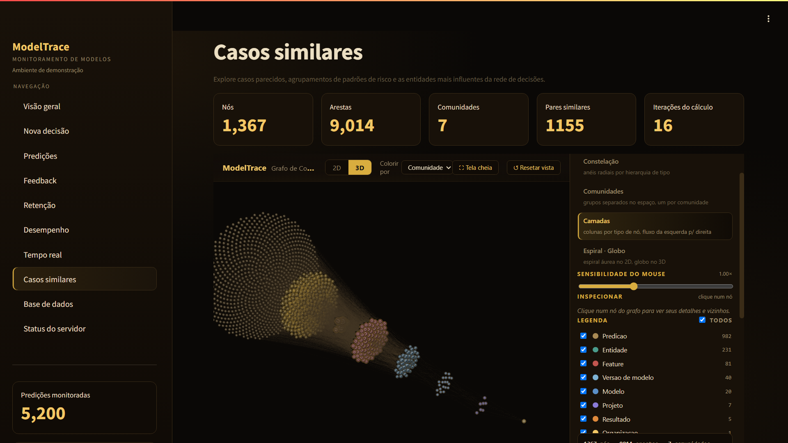